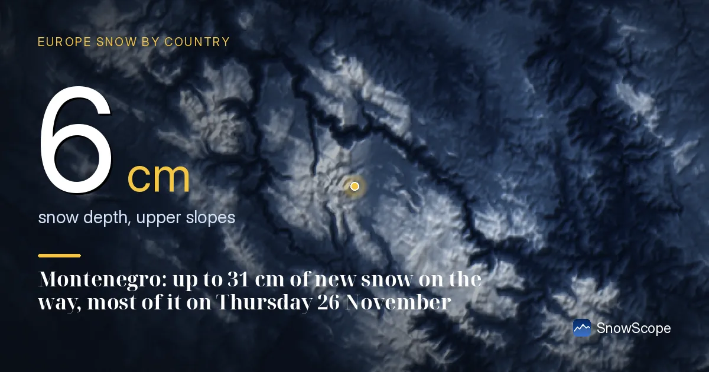
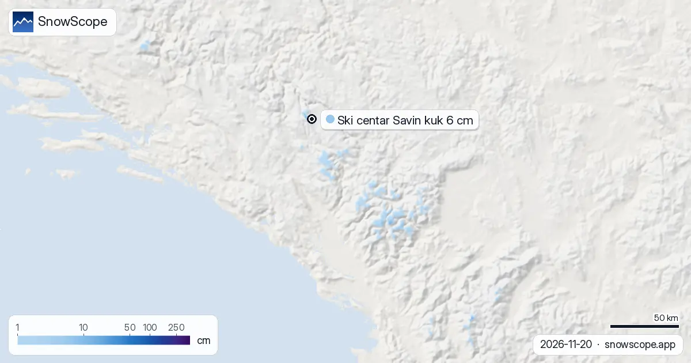

Montenegro: up to 31 cm of new snow on the way, most of it on Thursday 26 November
The week ahead could bring up to 31 cm to the snowiest slopes in Montenegro, 8 cm of it in the next three days. The biggest day looks like Thursday 26 November, with up to 24 cm.
See the live snow forecast for Ski centar Savin kuk in the SnowScope appSnow depth, powder alerts and the 3D map, free.
The snow on its way
Forecasts this far out move. The timing is usually more reliable than the totals, so keep a flexible plan and check again two days before you go.
In Montenegro, about 390 km² of high ground is white today, 380 km² more than yesterday. Roughly 3 % of the country's mapped mountains and hills are covered.
| Resort | Snow depth | New snow, 72 h | Coming, next days | Top |
|---|---|---|---|---|
| Ski centar Savin kuk | 6 cm | 5 cm | 20 cm | 2,175 m |

Snow on the way?
The week ahead could bring up to 31 cm, 8 cm of it in the next three days.
The snowiest day looks like Thursday 26 November, with up to 24 cm in the snowiest spots.
Shortlist for the weekend
Ski centar Savin kuk leads with 6 cm on its upper slopes.
At Ski centar Savin kuk: 5 cm of fresh snow over three days, 20 cm more expected by Monday 23 November.
Snow lies on the upper slopes of 1 out of 3 resorts in Montenegro.
Fresh snow
The last three days were dry or nearly so, with no more than 2 cm anywhere.
Seven days of snow cover
Day by day, the white area in Montenegro went: 16 November 80 km²; 17 November 20 km²; 18 November 20 km²; 19 November 10 km²; 20 November 390 km².
Ski centar Savin kuk has been the deepest resort every day this week.
Snow depth by height
By height, the picture looks like this: between 1,500 and 2,000 m, under 1 cm on average, 13 % covered; between 2,000 and 2,500 m, 2 cm on average, 55 % covered.
Snow cover today
The snow line sits near 2,100 m. Last week's 200 km² has grown by 190 km².
The neighbours today
For comparison, the neighbours on the same day: Bosnia and Herzegovina: 0 % white, deepest OC Bjelašnica ZOI '84 with 0 cm, up to 30 cm in the week ahead; Albania: 3 % white, deepest Ski Pista Bigëll with 0 cm, up to 24 cm in the week ahead.
Planning a day on the snow
Between 2,000 m and 2,500 m the cover is patchy, about 55 % white: expect grass and stones between the snow.
Below 1,500 m the slopes are still almost bare.
On the ground
Each day adds white ground, a good sign for the resorts that rely on natural snow.
With more snow in the forecast, the next days should improve things further.
Tips for skiers
- Fresh snow on a cold base sticks badly: take care on steep slopes.
- Early-season snow is thin over rocks: ski the groomed runs first.
- Morning snow is firm after a clear night: wait for the sun on south faces.
About these numbers
Resort snow depths are the deepest snow on the resort's upper slopes from the SnowScope snow model (about 1 km, run of 20 November); they are estimates for an area, not a measurement at one point. Station values are measurements on the date shown. Forecasts can change. Always read the official avalanche bulletin before going off-piste.
Cite this report
For research, teaching or the press: the numbers and charts are free to reuse under CC BY 4.0 with this citation.
SnowScope (2026), Montenegro: up to 31 cm of new snow on the way, most of it on Thursday 26 November, https://snowscope.app/blog/en/2026/11/montenegro-snow-on-the-way-20-november-2026.html, accessed 2026-11-20
SnowScope (Atlas Labs). (2026, November 20). Montenegro: up to 31 cm of new snow on the way, most of it on Thursday 26 November. SnowScope snow reports. https://snowscope.app/blog/en/2026/11/montenegro-snow-on-the-way-20-november-2026.html
BibTeX
@misc{snowscope2026montenegrosnowontheway20,
author = {{SnowScope (Atlas Labs)}},
title = {Montenegro: up to 31 cm of new snow on the way, most of it on Thursday 26 November},
year = {2026},
month = nov,
howpublished = {\url{https://snowscope.app/blog/en/2026/11/montenegro-snow-on-the-way-20-november-2026.html}},
note = {Published 2026-11-21 13:21 UTC; accessed 2026-11-20}
}· CC BY 4.0 · Methods, data and tools →
Ski centar Savin kuk: snow and temperature by height, this winter vs last (tools) →
Follow Ski centar Savin kuk
Free: a message when fresh snow is coming, and the forecast every morning.
More snow reports

Only Borovets and Bansko have a trace of snow at the top today, 2 cm each. A week ago Borovets had 11 cm. Day by day, and the one snowy day in the forecast.

Snow is falling on Slovenia's ski mountains today: about 37 cm on Kanin and 21 cm on Krvavec. Where the snow lies, how it compares with past winters, and the next snowy day.

December snow odds from 46 winters and checked day prices: Ski Cooper $49, Les 3 Vallées €75.70, Oukaïmeden no official tariff. Where a cheap December ski day works.